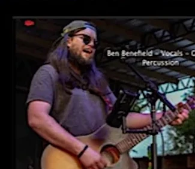
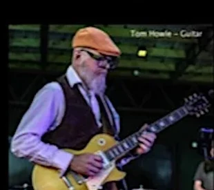
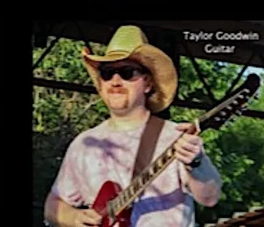
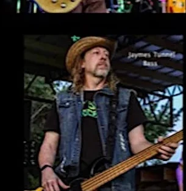
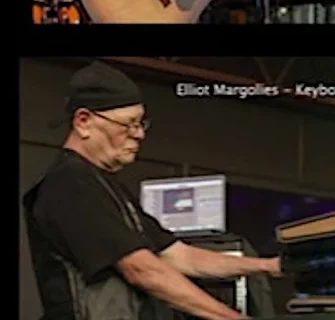
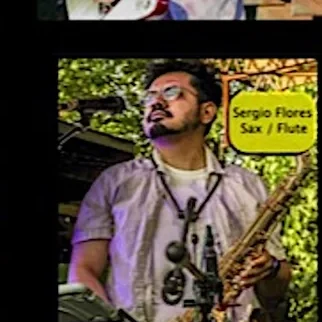
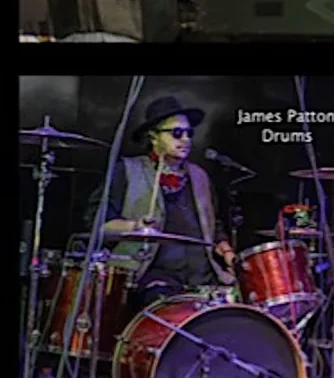

The band
Seven players. One Southern-rock storm.
Built around the guitar harmonies, vocals, flute, sax, keys, rhythm, and live energy that made the music unmistakable.
About Lightning in the Air
Keeping the sound alive.
Lightning in the Air is a high-energy Marshall Tucker Band tribute based in Alabama, dedicated to preserving the sound and spirit of one of Southern rock’s most iconic bands.
The band faithfully recreates the classic hits while leaving room for the musicianship, deep cuts, and extended moments longtime fans expect. The result is a concert that feels familiar without feeling frozen in time.
For longtime fans and new listeners alike, the show is a trip through the golden era of Southern rock with a full-band sound built for today’s stage.

The sound
Every piece matters.
Seven musicians recreate the layers that give these songs their character.
Live moments
Meet the sound onstage.







“They faithfully capture the sound, spirit, and energy of those classic songs that so many of us know by heart.”Greg Stone · Shelby County Arts Council